Bluetooth File Transfer
Browse compatible Bluetooth devices, manage and transfer files, and send selected contacts to another supported device.
About this app
Bluetooth File Transfer is an Android application by Medieval Software. It uses Bluetooth file transfer profiles to browse and manage files on compatible devices, exchange files and send contacts. The app can request access to your contacts so you can choose which contact details to share with another device.
Key features
- Browse and manage files on compatible Bluetooth devices
- Transfer files between supported devices using Bluetooth
- Select and send contacts as contact cards over Bluetooth
- Explore supported files and folders using the built-in file manager
- No root access required
Transfer contacts over Bluetooth
The app includes a Send contacts feature that lets you select contact entries and send them to a compatible phone or other supported device. Depending on the receiving device, connection settings and Bluetooth profile support, contact transfer may require pairing and confirmation on the receiving device.
This is a contact-sharing feature, not automatic access to every contact stored on nearby phones. You need a supported connection and appropriate permission. Do not access or transfer another person's private information without their consent.
Download Bluetooth File Transfer
Use the download link below to open the app post you provided on Telegram. Confirm the APK version, source and compatibility before installing it.
Safety and privacy
Bluetooth File Transfer may need contact access to send contacts you select. Review Android permission prompts carefully, pair only with devices you trust and confirm incoming or outgoing transfers. Do not share contacts or files without the owner's permission.
Hacker Apps is an independent directory and is not affiliated with Medieval Software. The Telegram download link is user-provided. Verify the APK's authenticity, version and permissions before installation.